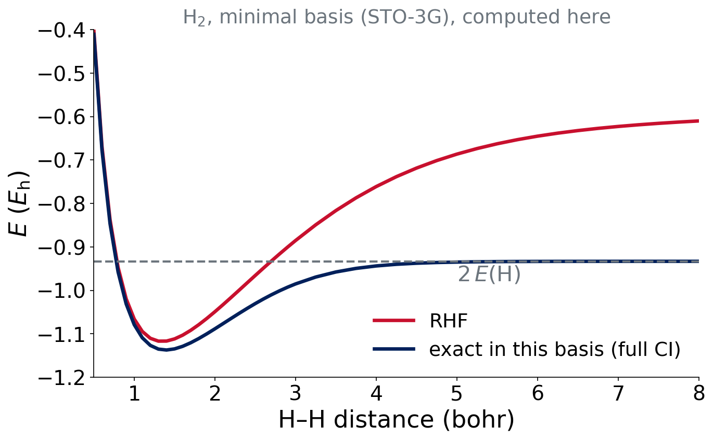

%%{init: {'themeVariables': {'fontSize': '28px'}}}%%
flowchart LR
A["Initial<br/>guess"] --> B["Build<br/>F"]
B --> C["Diagonalize<br/>FC = SCε"]
C --> D["New<br/>density"]
D --> E{"Converged?"}
E -- no --> B
E -- yes --> F["Total<br/>energy"]
Lecture 4 · Approximating the Hamiltonian I
Hartree–Fock and the self-consistent field
Roberto Peverati
Advanced Physical Chemistry · Florida Institute of Technology
Where we are
Two approximations, one done
- Lecture 2: we fixed how flexible Ψ is (the basis set)
- Today: how to handle the electron–electron repulsion (the method)
Check-in (3 min)
Any problems running Experiment 1 jobs? Full debrief in Lecture 7.
Hartree–Fock
Hartree’s idea: the mean field
Each electron moves in the average field of all the others.
\[ \frac{1}{r_{ij}}\ \longrightarrow\ \text{a one-electron potential from the other electrons' density} \]
N coupled electrons become N one-electron problems.
Hartree, Proc. Camb. Phil. Soc. 1928
Hartree–Fock
Take one Slater determinant and minimize \(E\) (variational principle). The result:
\[ \hat f\,\phi_i=\varepsilon_i\,\phi_i \]
Orbitals φᵢ with orbital energies εᵢ. The Fock operator depends on the orbitals themselves.
Fock, Z. Phys. 1930; Slater, Phys. Rev. 1930. pchem2: Molecules §11.3.1, Poly §13.2
The Fock operator
\[ \hat f=\hat h_\text{core}+\sum_j\big(\hat J_j-\hat K_j\big) \]
- \(\hat h_\text{core}\): kinetic energy + attraction to nuclei
- \(\hat J_j\): Coulomb, the classical repulsion from electron j
- \(\hat K_j\): exchange, a consequence of antisymmetry; no classical analogue
Exchange and self-interaction
\[ \hat J_{ii}=\hat K_{ii}\quad\Rightarrow\quad\text{an electron does not repel itself in HF} \]
HF is free of self-interaction. Remember this when we reach DFT.
Think–pair–share
Question (2 min)
In a Slater determinant, electrons with the same spin avoid each other (Pauli), with no Coulomb repulsion needed. Which term of \(\hat f\) describes this?
The exchange operator \(\hat K\). It lowers the energy of same-spin pairs.
The SCF procedure
Roothaan–Hall equations
In a basis set, HF becomes a matrix equation:
\[ \mathbf{F}\mathbf{C}=\mathbf{S}\mathbf{C}\boldsymbol{\varepsilon} \]
- F: Fock matrix, depends on C through the density
- S: overlap matrix of the basis functions
- C: orbital coefficients; \(\boldsymbol\varepsilon\): orbital energies
F depends on C, so we must iterate.
The SCF loop
Convergence test: energy change and DIIS error below the threshold.
The table in your output
Cycle Energy DIIS error
1 -920.4153225231 4.31e-02
2 -920.6017766913 7.45e-03
...
12 -920.6431907520 4.05e-09 Convergence criterion metSCF_CONVERGENCE 8: stop at \(10^{-8}\)- DIIS: extrapolation that speeds up convergence
- The same table appears for DFT
Example from the reading-output guide.
When the SCF goes wrong
- Oscillation: energy bounces between two values
- Slow convergence: many cycles
- Converges to the wrong solution: an excited or unstable state (Lecture 12)
Warning signs: “failed to converge” in the output, or a surprising ⟨S²⟩. A job that does not converge gives a meaningless energy.
Restricted versus unrestricted
- RHF: each spatial orbital holds two electrons (α and β); closed shells
- UHF: α and β electrons get different orbitals; open shells (atoms, radicals)
The SCF is iterative, variational and the same machinery for HF and DFT. Multiplicity must be right.
Orbital energies
Koopmans’ theorem
\[ \text{IP}\approx-\varepsilon_\text{HOMO} \]
- Occupied orbitals: used to build Ψ
- Virtual orbitals: empty, only a by-product
- Neglects orbital relaxation: a rough estimate
IQmol can draw these MOs from your output.
Think–pair–share
Question (2 min)
HF gives an orbital energy ε(HOMO) = −0.50 Eh for a molecule. Estimate its ionization potential in eV.
IP ≈ 0.50 × 27.211 ≈ 13.6 eV. A crude estimate (relaxation neglected).
Electron correlation
What HF misses
\[ E_\text{corr}=E_\text{exact}-E_\text{HF}\qquad(\text{same basis; ideally at the CBS limit}) \]
- Always negative (HF is variational)
- About 1% of the total energy
- But comparable to reaction energies, so it cannot be ignored
HF has no dispersion at all.
Dynamic and static correlation
- Dynamic: electrons dodge each other; many small contributions
- Static (nondynamic): several determinants are equally important, as in a stretched bond
H₂ stretched: RHF puts both electrons in one bonding orbital, which fails at long distance.
H₂ dissociation: RHF fails

Computed for this course: STO-3G integrals, RHF and 2-configuration full CI. At 1.4 bohr: RHF −1.1167, full CI −1.1373 Eh.
What the plot says
- Near equilibrium: RHF is close (the missing part is dynamic correlation)
- Far apart: RHF dissociates to the wrong limit (static correlation)
A single determinant cannot describe two separating electrons. Bond breaking needs more.
Ways forward
Wave-function methods
| Method | What it adds | Cost scaling |
|---|---|---|
| MP2 | perturbation theory for correlation | \(N^5\) |
| CCSD(T) | coupled cluster: the “gold standard” | \(N^7\) |
CCSD(T)/CBS provides the reference values for many experiments in this lab.
Summary
- HF: mean field + exchange from antisymmetry, solved by the SCF
- Missing: correlation (no dispersion at all)
- Wave-function fixes work but cost \(N^5\) to \(N^7\)
Lecture 5: density functional theory, a cheaper way to include correlation.
References
- Hartree, Proc. Camb. Phil. Soc. 24, 89 (1928)
- Fock, Z. Phys. 61, 126 (1930)
- Slater, Phys. Rev. 35, 210 (1930)
- Review: pchem2 Molecules §11.3.1, Poly §13.2

CHM 5111 · Advanced Physical Chemistry · Florida Institute of Technology